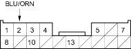
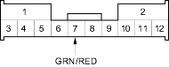
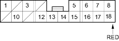
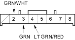
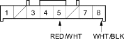
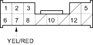

Entry Light Control System
|
22-132 |
NOTE: All connectors are wire side of female terminals.
UNDER-DASH FUSE/RELAY BOX CONNECTOR K (17P)

UNDER-DASH FUSE/RELAY BOX CONNECTOR O (12P)

UNDER-DASH FUSE/RELAY BOX CONNECTOR P (18P)

UNDER-DASH FUSE/RELAY BOX CONNECTOR Q (8P)

UNDER-DASH FUSE/RELAY BOX CONNECTOR X (8P)

UNDER-DASH FUSE/RELAY BOX CONNECTOR Y (13P)
